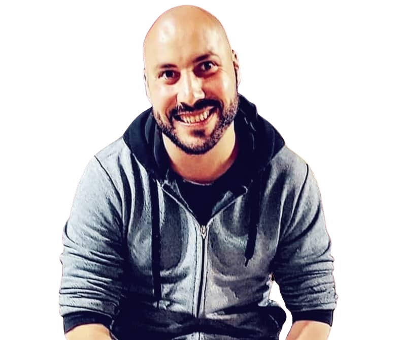
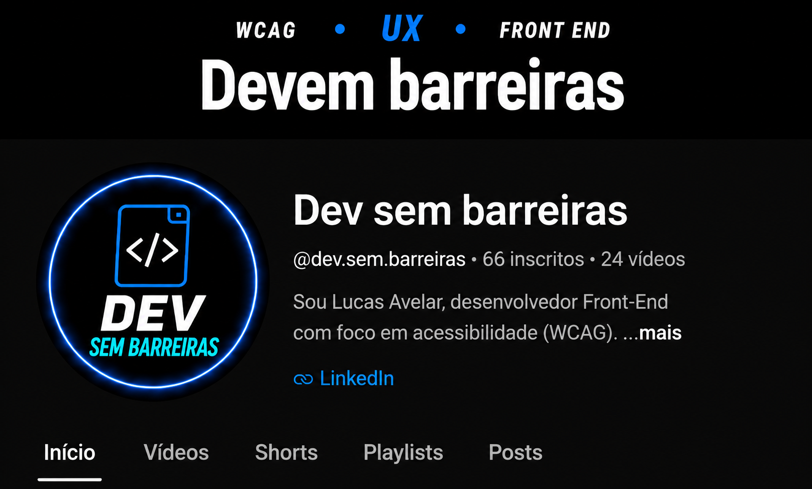
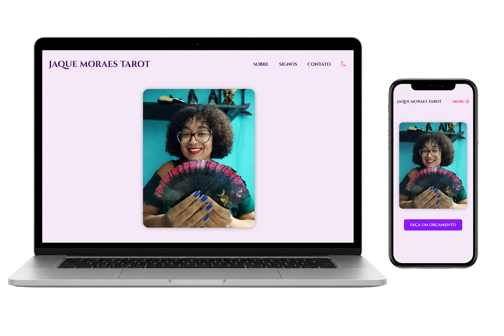
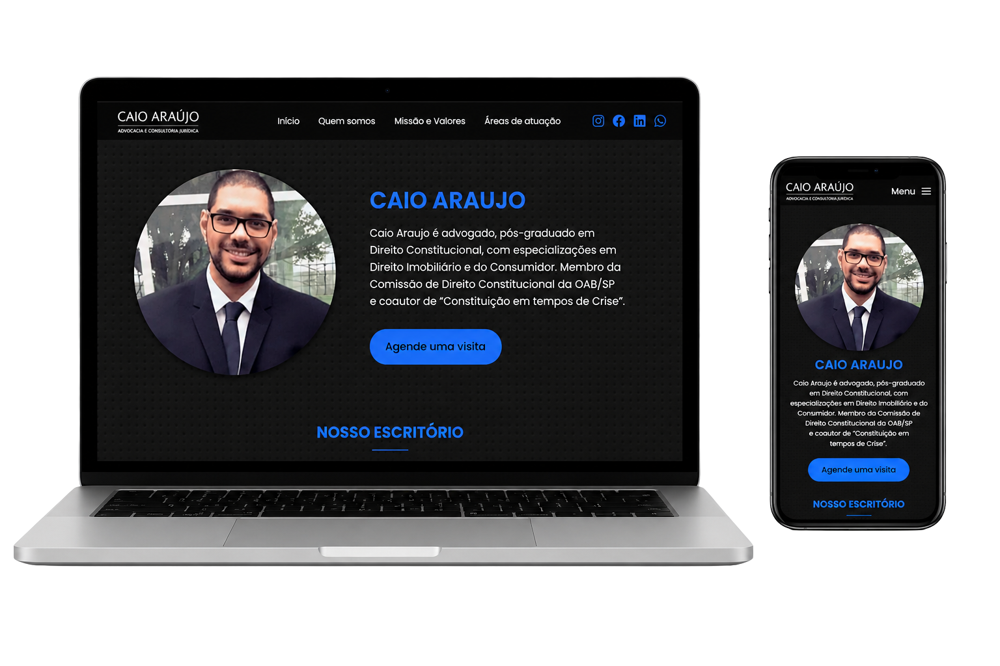

HTML5
Estrutura semântica para interfaces acessíveis.
- Semântica
- Acessibilidade
- SEO
- Elementos ARIA
- Descrição e Autodescrição correta em Imagens

Desenvolvedor Front-end com foco em Acessibilidade Digital (WCAG)
Sou estudante de Análise e Desenvolvimento de Sistemas e estou em transição de carreira para o
Desenvolvimento de Software.
Depois de mais de dez anos nas áreas jurídica e administrativa, encontrei no Front-End uma forma de unir
lógica, design e propósito.
Atualmente, me qualifico para atuar como especialista em Acessibilidade Digital (WCAG), área pela qual
desenvolvi um forte interesse após vivenciar na prática os desafios de navegação como pessoa com
deficiência visual (CID H54.2).
Trabalho com HTML, CSS, JavaScript e React, com foco em criar interfaces acessíveis, funcionais e
voltadas à experiência real do usuário.
Utilizo tecnologias modernas com foco em acessibilidade, performance e experiência do usuário.
Estrutura semântica para interfaces acessíveis.
Estilização moderna com foco em inclusão e responsividade.
Interações acessíveis e gerenciamento de foco.
Componentização e interfaces escaláveis e acessíveis.
Diretrizes internacionais para criação de experiências digitais acessíveis.
No canal Dev sem Barreiras compartilho conteúdos sobre WCAG, ARIA, HTML semântico, navegação por teclado, contraste de cores, leitores de tela e boas práticas de desenvolvimento acessível.


Desenvolvi este site para a taróloga Jaque Moraes, com o objetivo de modernizar sua presença digital e apresentar uma identidade visual mais leve, intuitiva e acessível utilizando WCAG

Este site foi pensado para transmitir confiança, empatia e profissionalismo, utilizando uma linguagem visual leve e uma estrutura semântica que prioriza boa experiência do usuário (UX), Acessibilidade (WCAG), Responsividade, Performance e Clareza na comunicação com famílias e responsáveis

Desenvolvi este site para o advogado Caio Araújo, modernizando sua antiga página e aplicando um design mais limpo, responsivo e alinhado à sua identidade profissional.